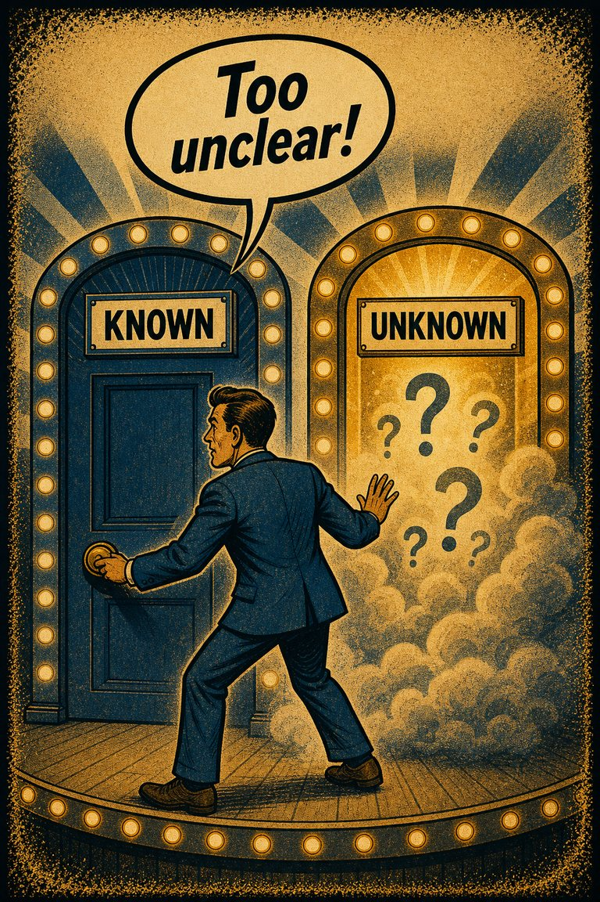
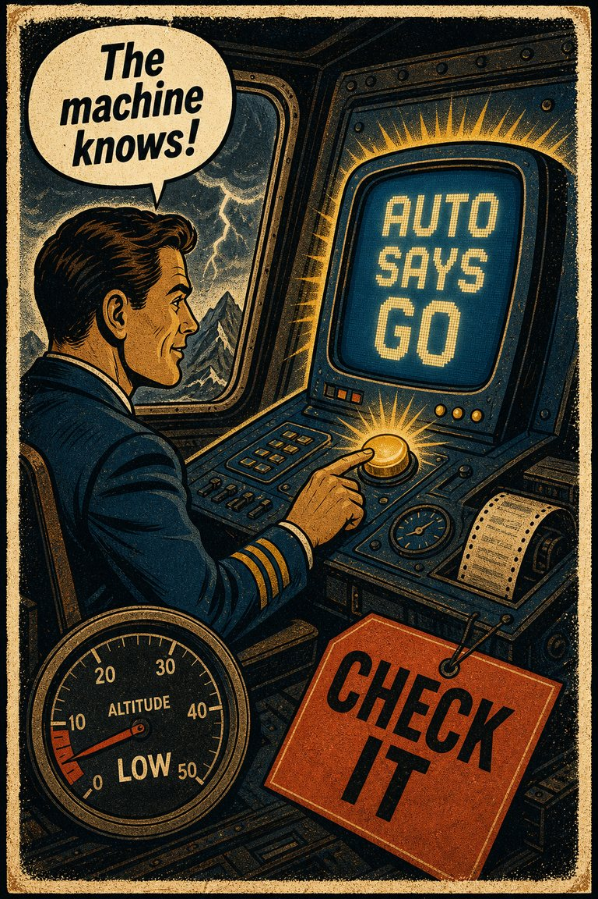
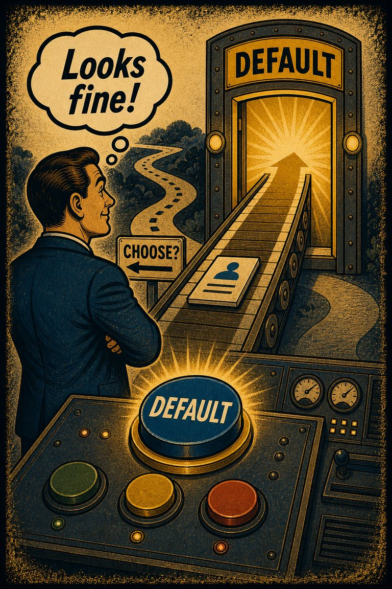
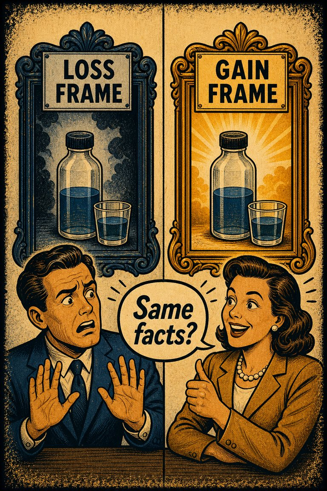

Common in public response
73
Highly relevant in media, philanthropy, and policy communication.
Rare
Frequent

Cognitive Biases
A practical cognitive-bias site with clear definitions, learning paths, assessments, self-audits, and debiasing tools.
Cognitive Bias
The tendency to behave more compassionately towards a small number of identifiable victims than to a large number of anonymous ones
What it distorts
Biases that shape choices, commitments, avoidance, preference drift, and action under uncertainty.
Typical trigger
Situations where decision is already difficult and the association cue feels easier to trust than a fuller review.
First countermove
Start with the decision question instead of the first intuitive answer, then check whether the association pattern is doing invisible work.
Coverage depth
Catalog entry
Would I still care this much if the same harm were represented statistically rather than personally?
Wikipedia groups this bias under decision and the association pattern, which suggests a distortion driven by the mind overweights resemblance, proximity, vividness, or intuitive linkage.
These are classroom-facing editorial estimates for comparing how the bias behaves in use. They are teaching aids, not measured statistics.
Common in public response
73
Highly relevant in media, philanthropy, and policy communication.
Easy to spot from outside
54
Often visible when one vivid case overwhelms a far larger statistical harm.
Easy to innocently commit
86
Human attention is naturally drawn toward the identifiable and concrete.
Teaching difficulty
42
Needs careful handling so statistical scope is not treated as emotionally optional.
This comparison makes the hidden pull easier to see before the technical label has to do all the work.
Biased move
This is like lighting a candle for one face and letting a whole dark hillside disappear because it has no single face attached to it.
Clearer comparison
Identifiable stories matter, but scale matters too. Moral seriousness should not collapse just because the victims become more numerous and less narratively sharp.
Do not use this label whenever one story is used to humanize an issue. The distortion begins when the larger invisible scope loses too much weight simply because it is statistical.
Use this label when compassion scales badly with the number of affected people and the identifiability of the victims dominates the response.
Use the quick check, caveat, and nearby confusions together. The fastest diagnosis is often the noisiest one.
Each example changes the surface context while keeping the same hidden distortion in place.
A person feels a stronger urge to help one named case than a larger but more statistical set of people with the same need.
A team mobilizes around one visible hardship while staying numb to a broader pattern affecting many more people.
Coverage of one identifiable tragedy drives more response than a larger anonymous disaster described mostly in numbers.
One vivid identifiable victim can command moral energy that a much larger abstract group somehow does not, even when the stakes are objectively greater.
Teaching note: This page helps users see that moral seriousness and emotional vividness are not linearly aligned.
The strongest debiasing moves change the process, not just the label.
Translate the named case back into the full scope before deciding how much weight the situation deserves.
Put one vivid human story next to the total scale data so identifiability and magnitude stay visible together.
Design reporting and philanthropic decisions so statistical harm is not left emotionally invisible.
Practice And Repair
Compassion fade reveals that moral energy is not naturally proportional. Identifiability concentrates feeling while large anonymous harms often flatten out.
A single vivid victim and a larger anonymous set compete for attention.
The one face feels more morally real and therefore more urgent than the larger count.
Magnitude loses influence because identifiability and narrative sharpness dominate response.
Keep one concrete story and one scope frame on the page together so the emotional vividness does not erase the larger scale.
What response would the full scale deserve if I were not allowed to compress it into one emotionally manageable case?
Spot It
Slow It
Reframe It
These are nearby labels that can share the same outer appearance while differing in what actually drives the distortion. Use the overlap, the distinction, and the diagnostic question together before settling the call.
Why compare it: Availability helps explain why vivid cases dominate recall; compassion fade is the moral-response version where larger anonymous groups receive less felt compassion.
Why compare it: Negativity bias overweights bad information; compassion fade specifically concerns the non-linear collapse of caring as victims become more numerous and abstract.
Why compare it: Scope neglect concerns insensitivity to size differences more broadly; compassion fade is the emotionally specific version tied to helping and moral response.
These are useful when the label seems roughly right but the process change still feels underspecified.
How much of my concern is being generated by identifiability rather than magnitude?
What would this case feel like if the named single victim became a larger anonymous group?
Am I allowing emotional vividness to underweight larger but less narratively sharp harms?
These sourced cases do not prove what was in someone's head with perfect certainty. They are teaching cases for showing where the bias pressure becomes visible in practice.
Identifiable-victim effect and large-scale helping
Studies on compassion fade show that people can respond more strongly to one identifiable victim than to larger numbers of anonymous victims.
Why it fits: Emotional salience fails to scale with total harm.
Wikipedia · Modern decision research
Identifiable-victim donations outpace large-group appeals
People often give more readily to a single named victim than to a far larger but more statistical group, even when the larger need is objectively greater.
Why it fits: Emotional uptake is being driven by vivid identifiability rather than scaling with total harm.
Wikipedia · Modern decision research
Use these sources to move from the teaching page into the underlying literature and seed reference material. The site is still written for clarity first, but the stronger pages should also be traceable.
A direct empirical source for the way affective response can weaken as the number of victims grows.
Seed taxonomy and broad coverage are drawn from Wikipedia's List of cognitive biases, then editorially reshaped into a teaching-first reference.
Once you know the bias, these nearby tools help you use the page in a real workflow rather than as a static definition.
Curated sequences where this bias commonly appears alongside a few predictable neighbors.
Short audits you can run before the distortion hardens into a decision, a verdict, or a post-hoc story.
Bias-aware AI prompts that widen the frame instead of simply endorsing the first preferred conclusion.
A mixed scenario set that can quietly pull this bias into the question bank without announcing the answer in the title first.
These links widen the frame around the bias without interrupting the core lesson on this page.
An article on why identifiable cases, vivid prototypes, and human-scale stories can overpower larger but more abstract evidence and need deliberate rebalancing.
CogBias theory
These neighbors were selected from shared categories, shared patterns, and explicit editorial links where available.

The tendency to avoid options when their probabilities are unclear, even if the unclear option may not actually be worse than the familiar one.

The tendency to give excess weight to the opinion of a high-status or authoritative source independent of whether the source has earned that weight on the specific issue.

The tendency to depend excessively on automated systems which can lead to erroneous automated information overriding correct decisions

The tendency to favor the preselected or default option simply because it is already positioned as the path of least resistance.
Just as losses yield double the emotional impact of gains, dread yields double the emotional impact of savouring

The tendency for the same underlying information to produce different judgments depending on how the options or outcomes are described.